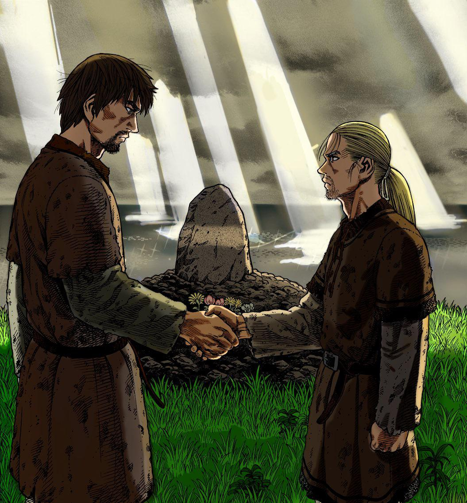

Bom, não sei onde começa mas, estou fazendo essa carta online espero que goste meu amigo.
Foram tantas coisas que passamos juntos, parece que foi ontem amigo, mas sempre pude te ajudar do meu jeito a relação de tanta coisa que você passou, eu sei que tem alguns momentos que eu fico triste por não conseguir te levantar quando fica depremido, mas sempre dei várias idéias para você sair do seu vazio, sonhos sem fim e persistência para conseguir esse sonho.
Mas estamos aqui mais um ano juntos, lutando e se ajudando a cuidar de alguma forma um do outro, essa carta ta meio mole mas, vai melhorar, eu gosto de ter sua amizade e seu grande apoio de várias formas meu amigo, por isso te dou esse presente a Mão feito nesse Html e Css incrivel que fiz pra você, tenha ótimo dia, um grande futuro pela frente, e nunca desiste dos seus sonhos, obrigador por ter me conhecido, sempre estarei ao seu lado nos momentos ruins e bons, até mais um presente meu amigo.
